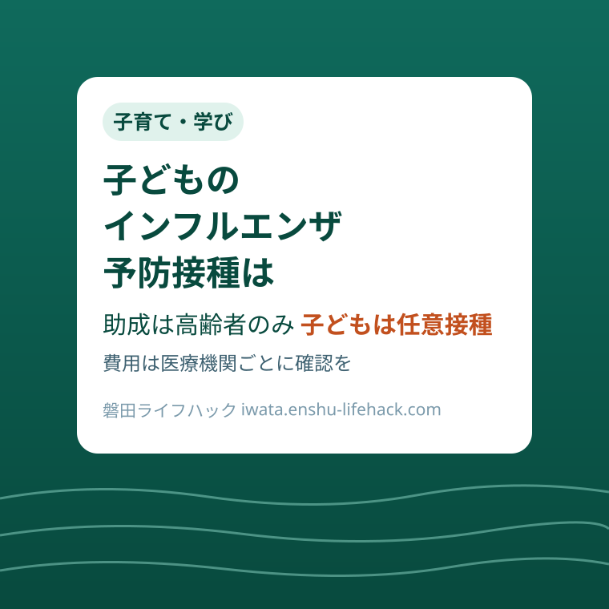

子育て・学び
磐田市の子どものインフルエンザ予防接種｜市の助成は高齢者のみ、子どもは任意接種で費用は医療機関ごとに確認

この記事の要点
Q. 磐田市の子どものインフルエンザ予防接種に、市の助成はありますか？
A. ありません。磐田市のインフルエンザ助成は65歳以上の方などを対象にした高齢者向け（自己負担1,600円）だけで、子どもは任意接種となり、費用は医療機関ごとに異なります。こども医療費助成でも予防接種代は対象外です。13歳未満は2回接種が目安のため、予約時に2回分の総額を確認してください。
導入——「子どもにも助成があるはず」と思って調べると、磐田市には無い
子どものインフルエンザ予防接種の季節になると、「市が費用を助成してくれるのではないか」と思って調べる家庭は少なくありません。近隣の自治体の中には、子どものインフルエンザ接種に独自の助成を設けているところもあります。
先に結論を書きます。2026年11月18日に磐田市公式サイトで確認した範囲では、子どもを対象にしたインフルエンザ予防接種の助成は見当たりませんでした。磐田市のインフルエンザ助成は、65歳以上の方などを対象にした高齢者向けの制度だけです。子どものインフルエンザ接種は任意接種で、費用は全額自己負担が原則になります。
もう一つ、混同しやすいのが「こども医療費助成」です。磐田市では高校生年代まで通院・入院が無料ですが、市の公式ページは、予防接種代は助成の対象にならないと明記しています。受給者証を持って小児科へ行っても、インフルエンザの予防接種は無料にはなりません。
この記事は手続きと費用の整理です。接種を受けるかどうかは、子どもの体調や持病も含めて保護者が医療機関と相談して決めるものです。ここでは、「助成はあるのか」「いくらかかるのか」「どう予約すればよいのか」という、調べものの部分だけを扱います。
なお、同じインフルエンザでも、祖父母の世代には市の助成があります。家族で一緒に受けに行く場合は、世代ごとに制度が違うことを先に押さえておくと、窓口での行き違いが減ります。
まず、公式資料から事実を整理する
磐田市の公式ページ「令和8年度 高齢者インフルエンザ予防接種費用の助成」（ページ番号1004703、2026年9月24日更新）によると、市の助成の対象は、接種日に磐田市に住民登録があり、65歳以上の方、または60歳以上65歳未満で心臓・腎臓・呼吸器などに重い障害がある方です。子どもの年齢は、対象のどこにも入っていません。
高齢者向けの内容は、自己負担1,600円、接種回数1回、期間は令和8年（2026年）10月1日から令和9年（2027年）3月31日までです。磐田市・袋井市・森町・浜松市天竜区・旧浜北区の協力医療機関で受ける場合は申請は不要で、予診票は協力医療機関で配布され、個別の郵送は行われません。生活保護世帯の方は、市が発行した無料券を接種前に提出すれば無料です。
一方、子どものインフルエンザ接種は、国の制度でも定期接種ではなく任意接種です。インフルエンザの定期接種の対象は高齢者などに限られ、子どもが受ける場合は、希望者が医療機関に申し込んで受ける任意接種として扱われます。任意接種の費用は公費の決まった金額がなく、医療機関ごとに料金が設定されるため、市の一覧表のような形では示されません。
私が2026年11月18日に磐田市公式サイトで確認した範囲でも、インフルエンザの助成を案内する市のページは、この高齢者向けのページだけでした。子どもの定期予防接種（五種混合、MR、日本脳炎など）の案内は市にありますが、インフルエンザはその定期接種の種類には含まれていません。

つまり、磐田市の子どもについては、「助成の申請をし忘れた」のではなく、「申請する助成そのものが無い」というのが正確な理解です。申請書を探す時間は、料金の確認と予約に使った方が実務的です。
費用の目安を知りたいところですが、任意接種の料金は医療機関ごとに異なり、市は金額を定めていません。同じ市内の小児科でも金額が違うことがあるため、この記事では金額を断定せず、予約の電話で総額を確認する段取りを後半にまとめます。
こども医療費助成では、予防接種代は戻らない
磐田市の公式ページ「こども医療費」（ページ番号1001766、2026年6月15日更新）は、助成の対象にならないものとして、「保険診療以外の経費（特定初診料、入院証明書料、健診代、予防接種代など）」を挙げています。予防接種代は、はっきり対象外と書かれています。
こども医療費助成は、保険診療の自己負担分を市が助成する仕組みです。インフルエンザの予防接種は保険診療ではないため、そもそも助成の計算に入りません。受給者証を窓口で提示しても、接種の料金はそのまま請求されます。
払い戻しも同様です。受給者証を使わなかった受診や県外受診には払い戻しの仕組みがありますが、対象は保険診療の医療費です。予防接種の領収書を後から市に持って行っても、払い戻しの対象にはなりません。
「子どもは医療費が無料のまち」という印象が強い分、この線引きは見落とされがちです。熱が出て受診すれば無料でも、熱を防ぐための接種は有料。この違いを知っておくだけで、家計の見通しは立てやすくなります。
なお、インフルエンザにかかって受診した場合の診療は保険診療ですから、こども医療費助成の対象です。かかった後の受診は無料、かかる前の接種は有料、という組み合わせになっています。
子どもの接種の回数と時期——13歳未満は2回が目安
任意接種でも、受け方の基本は高齢者と大きくは変わりません。かかりつけの小児科などに直接予約し、予診票は医療機関で受け取って記入します。市の協力医療機関一覧のような一括の案内は任意接種にはないため、受付の可否と料金は各医療機関への確認になります。
回数の目安は、年齢で分かれます。一般に、13歳未満は2回接種、13歳以上は1回接種が目安とされています。2回受ける場合は、2週間から4週間の間隔をあけるのが標準で、免疫のつき方を考えると4週間あけることが望ましいとされています。最終的には、接種する医療機関の指示に従ってください。
時期の考え方も大切です。ワクチンの効果が現れるまでには接種から約2週間かかるとされ、流行の本番に間に合わせるには、2回目の完了から逆算して1回目の日を決める必要があります。13歳未満の子どもは、1回目を早めに済ませておかないと、2回目が年末年始の休診に重なりやすくなります。
近年は、鼻から投与するタイプのワクチン（経鼻ワクチン）を取り扱う医療機関もあります。対象は2歳から18歳で、接種は1回とされています。注射が苦手な子どもには選択肢になりますが、取り扱いの有無や料金は医療機関ごとに異なるため、予約の際に確認が必要です。
費用を抑える手がかりとして、保護者が加入している健康保険組合に、任意接種への補助制度がある場合があります。勤務先の補助は市の助成とは別の仕組みで、領収書の提出が必要なことが多いため、受ける前に加入先の案内を確認しておくと安心です。
磐田の暮らしに置き換える——予約の電話で聞く3点
磐田市で子どものインフルエンザ接種を受けるときの段取りは、シンプルです。かかりつけの小児科を決め、電話かウェブで予約し、当日に料金を支払って受けます。市の窓口に行く手続きはありません。
予約の電話では、3点を聞いておくと当日に困りません。一つ目は料金の総額です。13歳未満は2回受けるため、1回分の金額だけでなく、2回分の合計を聞いておきます。二つ目は、2回目の予約をその場で取れるかどうかです。間隔が決まっている接種は、先に2回目まで押さえると管理が楽になります。

三つ目は、きょうだい分を同じ日に受けられるかどうかです。磐田市の小児科は予防接種の専用時間を設けているところが多く、枠の埋まり方も早めです。きょうだいで回数が違う場合（13歳未満と13歳以上）は、終わる日がずれることも計算に入れておきます。
祖父母と孫が同じ時期に受ける家庭では、制度の違いに注意してください。祖父母は市の助成で自己負担1,600円、協力医療機関なら申請不要です。孫は任意接種で、料金はその医療機関の設定通りです。同じ病院・同じ日でも、扱いは別々になります。
当日は、母子健康手帳を持参すると接種の記録が残せます。任意接種でも記録は大切で、翌年以降に「去年は何回受けたか」を医療機関から聞かれたときの手がかりになります。
評価——良い点と、注文したい点
良い点は、高齢者向けの助成が分かりやすく案内されていることです。対象・金額・期間・申請の要否が市のページに揃っていて、協力医療機関なら申請不要という使い方も明快です。家族の中で対象者がいる場合、その分の段取りは迷いません。
良い点はもう一つ、こども医療費のページで「予防接種代は対象外」と明記されていることです。対象外をはっきり書いてあるからこそ、調べた人は早い段階で正しい前提に立てます。
注文したい点は、子どものインフルエンザについて「助成はない」という案内自体が市のサイトに無いことです。助成が無いことと、案内が無いことは別です。「子どもは任意接種で、市の助成はありません」と一行書かれたページがあるだけで、保護者が市のサイトと医療機関の間を行き来する手間は減ります。
注文したい点はもう一つ、任意接種の料金が医療機関ごとに異なるため、家庭が比べる材料を持ちにくいことです。市が金額を決める制度ではない以上、せめて「料金は医療機関ごとに異なります。予約時に2回分の総額を確認してください」という案内が、子どもの予防接種のページに添えられていると親切だと感じます。
対案・結論——助成探しではなく、料金確認と2回目の逆算を
結論として、磐田市で子どものインフルエンザ接種を受ける家庭がやるべきことは二つです。一つは、市の助成を探すのではなく、かかりつけの医療機関に料金の総額を電話で確認すること。もう一つは、13歳未満なら2回目から逆算して、1回目の予約を早めに入れることです。
こども医療費の受給者証は、接種では使えません。窓口で「無料だと思っていた」とならないよう、家族の中でも先に共有しておいてください。かかった後の受診は無料でも、接種は有料です。
勤務先の健康保険組合に補助がある場合は、領収書が必要になることがあります。接種の領収書は、念のため年度末まで保管しておくのが安全です。
祖父母の分は別の段取りです。65歳以上の方は市の助成で自己負担1,600円、期間は2027年3月31日まで。同じ「インフルエンザの予防接種」という言葉でも、世代で制度が違うことを、家族の予定表に書き分けておくと混乱がありません。
確認する順番
- 子どものインフルエンザ接種は磐田市では任意接種で、市の助成はないことを前提にする。こども医療費助成でも予防接種代は対象外
- かかりつけの小児科に、受け付けの可否と料金（13歳未満は2回分の総額）を確認する
- 13歳未満は2回目から逆算して1回目の日を決め、できれば2回目まで予約を押さえる
- 保護者の健康保険組合に任意接種の補助があるかを、受ける前に確認する
- 当日は母子健康手帳を持参し、接種の記録を残す。領収書は年度末まで保管する
家族で共有するための記録
接種を受けたら、受けた日と回数を母子健康手帳と家族のカレンダーに残してください。13歳未満は2回目が数週間後になるため、予約日を家族で共有しておくと、間隔の管理がしやすくなります。
来年のために、今年の料金と医療機関名もメモしておくと役立ちます。任意接種の料金は医療機関ごとに異なり、翌年に同じ場所で受けるとは限りません。今年の記録が、来年の比較の出発点になります。
大石の視点
大石の視点として、この件でいちばん引っかかるのは「助成が無い」ことそのものより、「無いことが書かれていない」ことです。制度の有無は自治体の判断ですが、無いという情報も、保護者にとっては立派な案内です。調べた人が「自分の探し方が悪いのか」と何度も検索し直す時間は、市のページの一行で消せます。
磐田市は、子どもの医療費を高校生年代まで無料にしているまちです。その手厚さがあるからこそ、予防接種だけが線の外にあることは、先に知っておく価値があります。受けるかどうかを決めるのは各家庭ですが、費用の前提だけは、正確に揃えておきたいところです。
まとめ
磐田市のインフルエンザ予防接種の助成は、65歳以上の方などを対象にした高齢者向けの制度（自己負担1,600円、2027年3月31日まで）だけです。子どものインフルエンザ接種は任意接種で、市の助成はなく、費用は医療機関ごとに異なります。こども医療費助成でも、予防接種代は対象外です。
受ける場合は、かかりつけの小児科に料金の総額を確認し、13歳未満は2回目から逆算して予約すること。助成の申請先を探す時間は、そちらに使ってください。
この記事で扱った範囲
- 磐田市のインフルエンザ助成は高齢者向けのみ（65歳以上の方など、自己負担1,600円、期間は2026年10月1日から2027年3月31日まで）。子ども向けの助成は、2026年11月18日に市公式で確認した範囲では見当たらない
- 子どものインフルエンザ接種は任意接種で、費用は医療機関ごとに設定される全額自己負担が原則
- こども医療費助成では予防接種代は対象外（市公式ページに明記）。受給者証を使っても無料にならず、払い戻しもない
- 回数の目安は13歳未満が2回（間隔2〜4週間）、13歳以上が1回。料金と2回目の予約は医療機関への電話確認が確実
参考にした公式情報
- 令和8年度 高齢者インフルエンザ予防接種費用の助成／磐田市（ページ番号1004703、2026年9月24日更新、2026年11月18日確認）
- こども医療費／磐田市（ページ番号1001766、2026年6月15日更新、2026年11月18日確認）
最終確認日：2026-11-18 ／ 本記事は公表情報と執筆者の見解を分けて記載しています。制度・数値・公開状況は変更される場合があるため、最新情報は磐田市公式ページでご確認ください。